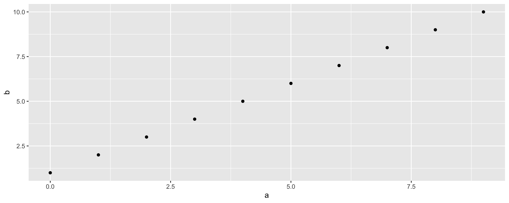
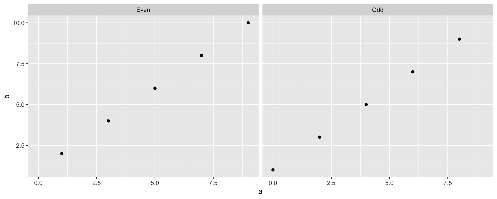
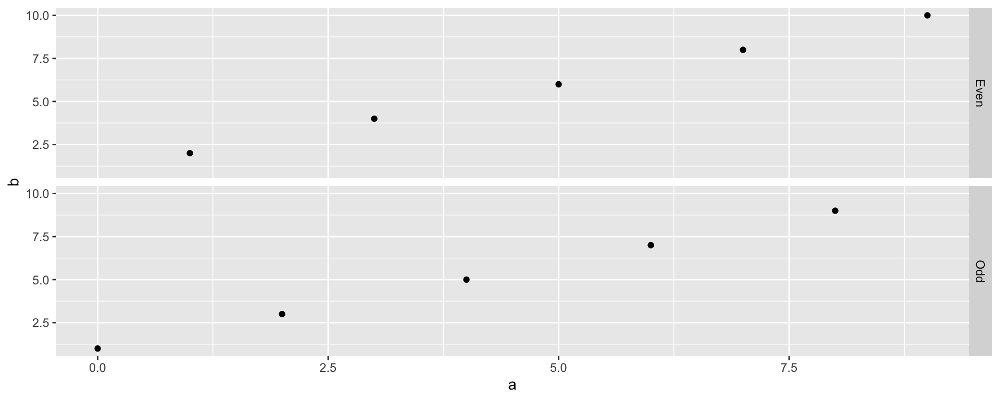
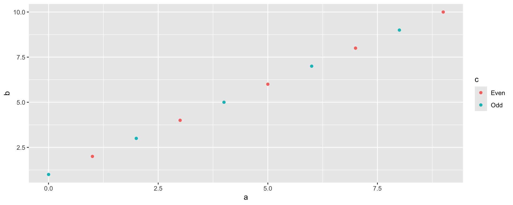
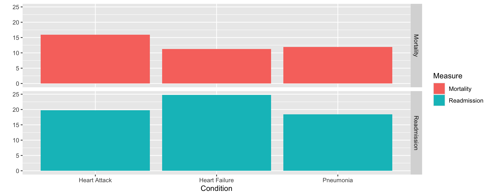
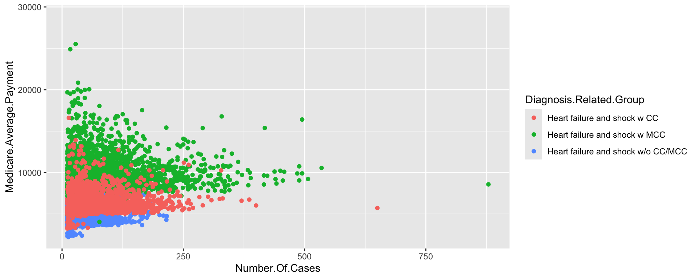
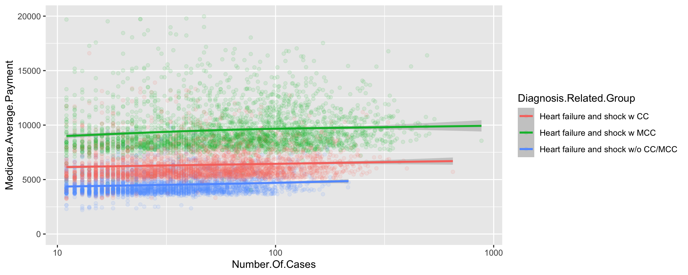
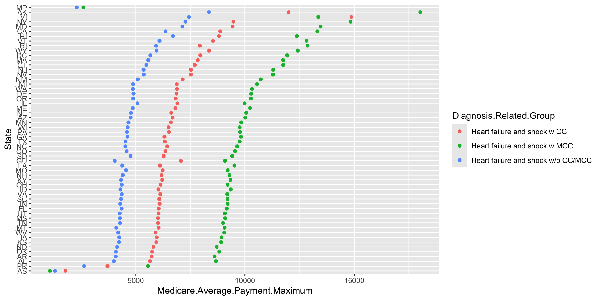
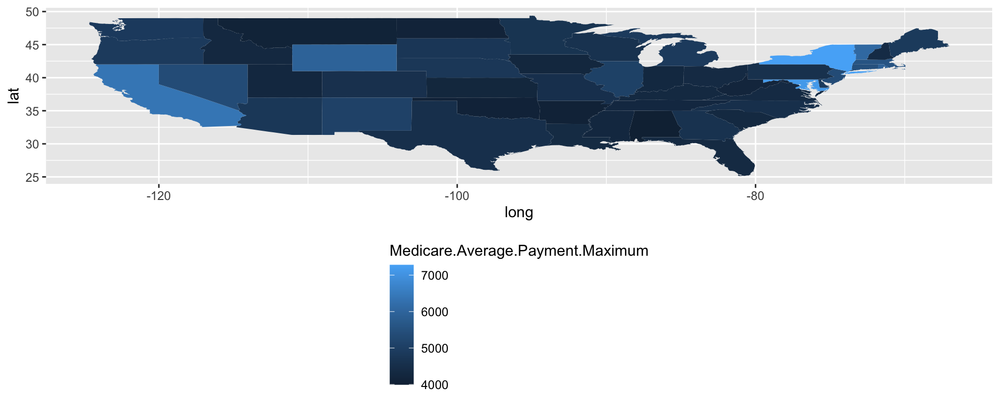

程式設計與應用
第十五章：ggplot2
實踐大學
2026-06-08
圖形文法
簡短入門
Hadley Wickham 的 ggplot2 是 R 最受歡迎的套件之一——不只因為輸出漂亮，更因為它用一套描述圖表的語言：圖形文法（grammar of graphics）。你描述想呈現什麼，而非怎麼畫。玩具資料（lattice 那份，變數改了名）：

我們只給了 x、y 和資料集——從沒說出「散布圖」三個字。（qplot ＝ quick plot；新版 ggplot2 已不建議使用但仍可用——完整的 ggplot() 寫法稍後登場。）
圖表物件
跟 lattice 一樣，ggplot2 函式回傳物件；列印才作畫。在函式與腳本裡：請自己 print。
data: a, b, c [10x3]
mapping: x = ~a, y = ~b
faceting: <empty>
-----------------------------------
geom_point: na.rm = FALSE
stat_identity: na.rm = FALSE
position_identity summary 把圖表解剖得一清二楚：資料、映射（x ＝ a、y ＝ b）、分面，以及圖層（geom_point ＋ stat_identity ＋ identity 位置）。
分面與顏色
面板（lattice 的條件）在這裡叫分面（facet），以公式指定；按組上色則只是另一種映射：



（Hadley 偏好的第一種寫法：qplot(x=a, y=b, data=d) + facet_wrap(~c)。）
單變量：直方圖與密度圖
只給 x 時，qplot 預設畫直方圖；想換geom 就點名：
文法的組成
畫一張圖其實同時在做很多事；文法替每件事命名，ggplot2 的函式名也跟著走：
- 資料（Data）——被視覺化的東西；
- 映射（Mappings）——變數 → 圖表元件；
- 幾何物件（geom）——點、條、線……（
geom_point、geom_bar……）； - 美學屬性（aes）——外觀：字級、標籤、刻度；
- 尺度（Scales）——變數如何對應到美學屬性；
- 座標（Coordinates）——笛卡兒（
coord_cartesian）、極座標（coord_polar）、地圖投影（coord_map）； - 統計變換（stat）——摘要：直方圖的
stat_bin、盒鬚圖的stat_boxplot……； - 分面（Facets）——資料如何切成子圖；
- 位置調整（Positional adjustments）——細部擺放（堆疊、並列、抖動……）。
對任何圖表物件呼叫 summary，每個組件一覽無遺——調圖時的地圖。
較複雜的範例：Medicare 資料
資料
真實又複雜的資料：美國 Medicare 的費用與療效，打包成三份——outcome.of.care.measures.national（心臟病發、心衰竭、肺炎的全國死亡率／再入院率）、medicare.payments（各醫院 × 70 種病症的平均給付；140,722 筆）、medicare.payments.by.state：
Condition Measure Rate
1 Heart Attack Mortality 15.9
2 Heart Failure Mortality 11.3
3 Pneumonia Mortality 11.9
4 Heart Attack Readmission 19.8
5 Heart Failure Readmission 24.8
6 Pneumonia Readmission 18.4長條圖：分面……
x 是類別，所以是單變量圖、條高來自 weight=Rate；按 Measure 分面、按 Measure 填色：

……或並列
丟掉分面，設 position="dodge" 讓條並肩而立。書中寫的是 qplot(..., position="dodge")，但新版 ggplot2 已移除 qplot 的 position 引數——位置調整如今屬於圖層，所以改用完整文法寫：

兩種都有效——但論點不同：分面版引導讀者在每個指標內比較病症；並列版引導在每個病症內比較指標。圖表的呈現就是一種論證。
給付 vs. 案量
問題：收治案量大的醫院，向 Medicare 收的錢是多還是少？限縮到三個心衰竭診斷組，畫給付對案量、按診斷上色：
temp <- tempfile(fileext = ".rda")
download.file("https://raw.githubusercontent.com/cran/nutshell/master/data/medicare.payments.rda",
temp, mode = "wb")
load(temp)
heart.failure <- c("Heart failure and shock w/o CC/MCC",
"Heart failure and shock w MCC",
"Heart failure and shock w CC")
payment.plot <- qplot(x=Number.Of.Cases, y=Medicare.Average.Payment,
data=subset(medicare.payments, Diagnosis.Related.Group %in% heart.failure),
color=Diagnosis.Related.Group)
payment.plot
沒法讀——全部擠在左邊。（小案量被 HIPAA 法規遮蔽。）
加圖層修圖
藥方：x 軸取對數、點半透明（alpha=I(1/10)）、加平滑線、修剪 y 範圍。優雅的做法是用 + 加組件：
payment.plot.alpha <- qplot(x=Number.Of.Cases, y=Medicare.Average.Payment,
data=subset(medicare.payments, Diagnosis.Related.Group %in% heart.failure),
color=Diagnosis.Related.Group, alpha=I(1/10), ylim=c(0, 20000))
payment.plot.scaled <- payment.plot.alpha + scale_x_log10() + geom_smooth()
payment.plot.scaled
這個物件的 summary 現在有兩組 geom/stat/position——一層一組——alpha 美學貫穿其中。
替點圖重排因子
費用隨案量上升——也許是地理因素？看州層級資料，先把 State 的水準按給付重排（排的是水準、不是資料列）再畫點圖：
temp <- tempfile(fileext = ".rda")
download.file("https://raw.githubusercontent.com/cran/nutshell/master/data/medicare.payments.by.state.rda",
temp, mode = "wb")
load(temp)
medicare.payments.by.state.hf <- subset(medicare.payments.by.state,
Diagnosis.Related.Group %in% heart.failure)
medicare.payments.by.state.hf$State <- with(medicare.payments.by.state.hf,
reorder(State, Medicare.Average.Payment.Maximum, mean))
qplot(x=Medicare.Average.Payment.Maximum, y=State,
data=medicare.payments.by.state.hf,
color=Diagnosis.Related.Group)
榜首：北馬里亞納群島、阿拉斯加、維京群島——偏遠又昂貴——接著是紐約、馬里蘭、加州：生活成本高且醫院大。最便宜的：波多黎各、美屬薩摩亞。費用與案量都和地理相關。
區域著色地圖（Choropleth）
相鄰的州相似嗎？把給付與州界多邊形（maps 套件）合併、按給付填色——geom="polygon" 加上移位的圖例：
library(maps)
states <- map_data("state")
state.name.map <- data.frame(abb=state.abb, region=tolower(state.name),
stringsAsFactors=FALSE)
states <- merge(states, state.name.map, by="region")
toplot <- merge(states, medicare.payments.by.state,
by.x="abb", by.y="State")
toplot <- toplot[order(toplot$order), ]
qplot(long, lat,
data=subset(toplot,
Diagnosis.Related.Group=="Heart failure and shock w/o CC/MCC"),
group=group, fill=Medicare.Average.Payment.Maximum,
geom="polygon") +
theme(legend.position="bottom", legend.direction="vertical")
（書中寫的 opts(...) 早已被 theme() 取代。）
Quick Plot 與完整文法
qplot：引數
| 引數 | 說明 | 預設值 |
|---|---|---|
x、y、data |
值與（可選的）資料框 | |
facets |
分面公式：單邊 → facet_wrap、雙邊 → facet_grid |
NULL |
geom |
geom 名稱的字元向量 | "auto"：有 x,y 用 point／只有 x 用 histogram |
stat／position |
統計變換／位置調整 | list(NULL) |
xlim、ylim、log |
範圍；log ＝ ""／"x"／"y"／"xy" |
|
main、xlab、ylab、asp |
標題、標籤、長寬比 | 由運算式自動生成 |
... |
其他美學屬性，傳給各圖層 |
ggplot ＋ 圖層：囉嗦但靈活的正規寫法
qplot 之外：先用 ggplot(data, mapping=aes(...)) 建物件，再用 + 加圖層與選項：
data: a, b, c [10x3]
mapping: x = ~a, y = ~b
faceting: <empty>
-----------------------------------
geom_point: na.rm = FALSE
stat_identity: na.rm = FALSE
position_identity aes(x, y, ...)宣告映射（書中年代的親戚：aes_string、aes_auto）。- 光禿禿的
ggplot(...)沒有圖層——直接列印會報錯（“No layers in plot”）。 - 泛用的
layer(...)以 geom 簡名加圖層（layer("point")）；實務上都用geom_*便利函式。
geom 詞彙表
geom_abline 斜率＋截距的線 |
geom_errorbar(h) 誤差棒 |
geom_polygon 多邊形 |
geom_area 面積圖 |
geom_freqpoly 次數多邊形 |
geom_quantile 分位數迴歸線 |
geom_bar 長條 |
geom_hex 六角分箱 |
geom_rect 矩形 |
geom_bin2d 二維分箱熱圖 |
geom_histogram 直方圖 |
geom_ribbon 緞帶（Minard 風） |
geom_blank 什麼都不畫 |
geom_hline／geom_vline 水平／垂直線 |
geom_rug rug |
geom_boxplot 盒鬚圖 |
geom_jitter 抖動的點 |
geom_segment 線段 |
geom_contour 等高線 |
geom_line／geom_path 線／路徑 |
geom_smooth 平滑均線 |
geom_crossbar 無鬚的盒 |
geom_linerange 垂直區間 |
geom_step 階梯 |
geom_density(2d) 密度 |
geom_point／geom_pointrange |
geom_text 文字 |
geom_tile 磁磚 |
stat、scale、coord、facet、position
- stat_：
bin、bin2d、binhex、boxplot、contour、density、density2d、function、identity、qq、quantile、smooth、spoke、sum、summary、unique，以及線條三兄弟abline／hline／vline（新版已併入對應的 geom）。 - scale_：
alpha、brewer（ColorBrewer）、continuous、date／datetime、discrete、gradient／gradient2／gradientn、grey、hue、identity、linetype、manual、shape、size（現代拼法如scale_color_brewer、scale_x_continuous）。 - coord_：
cartesian、equal、flip、map、polar、trans。 - facet_：
facet_grid（網格排列）與facet_wrap（一維清單繞排成二維）。 - position_：
dodge、fill、identity、jitter、stack。
延伸學習
- Hadley Wickham 的專書 ggplot2: Elegant Graphics for Data Analysis——最權威的論述。
- 官方文件網站（現為 https://ggplot2.tidyverse.org）與 R Graphics Cookbook。
Tip
課程備註：API 的漂移。 書出版之後：opts() → theme()；qplot 軟性退役、改推 ggplot() + geom_*()；尺度改寫成 scale_<美學>_<型態>。但文法本身——資料、映射、geom、stat、scale、coord、facet、position——分毫未變，這正是「有一套文法」的價值所在。
版權聲明
版權。 本講義改編自 Joseph Adler 著、O’Reilly Media 出版之 R in a Nutshell: A Desktop Quick Reference（第二版）。原著作者與出版社保留一切權利。
僅限非商業用途。 本教材僅供教學使用，不得用於商業營利。
標示出處。 任何重製、散布或使用本教材，皆須妥善標註原始出處。

R in a Nutshell: A Desktop Quick Reference